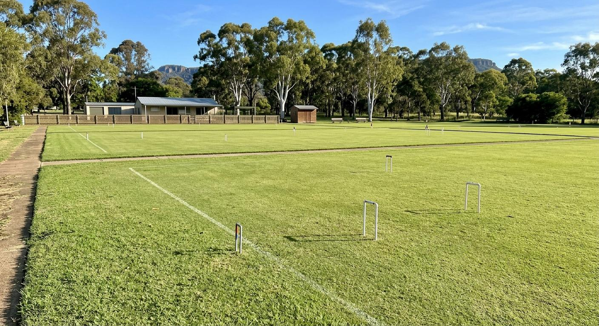
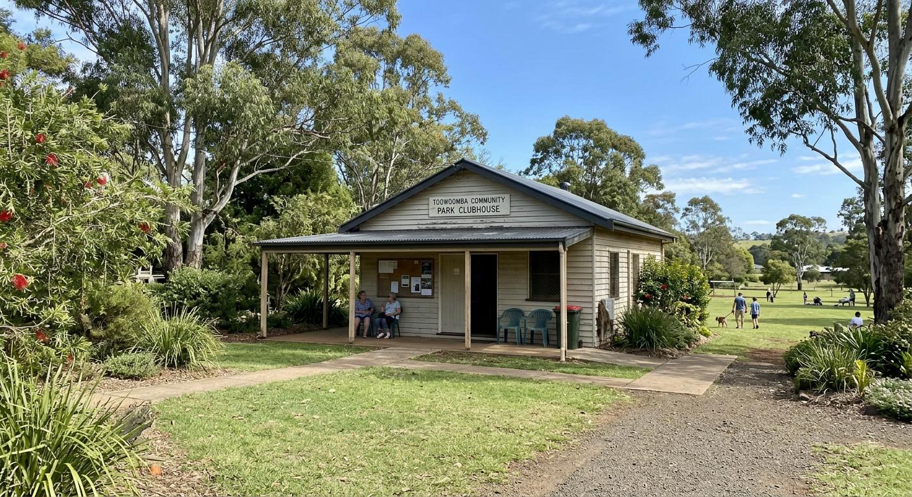

No experience needed. Just turn up in flat shoes. We supply everything. Your first session is completely free. Main competitive Golf Croquet: Tuesdays and Fridays at 9 am.
First Session Free, Just Turn UpNo booking needed. Flat shoes and a hat. We supply everything else.
No experience needed. No booking required. Turn up to any session in flat shoes and we'll hand you a mallet and show you around.
No cost, no commitment. Come and see what it is about.
Mallets, balls, hoops. Just bring flat shoes and a hat.
One-on-one sessions for $15. Golf and Association Croquet.
No booking needed. Just turn up to any session in the schedule.

Our four full-size lawns at Queens Park. This is what you are turning up to.
We were founded in 1941 and have been in Queens Park ever since. Most of our members have been coming for years, some for decades. We get a good mix: competitive players on Tuesdays and Fridays, and the social crowd on Tuesday and Friday afternoons. The club plays four forms of croquet across four full-size lawns, six days a week.
A gentle sport with more depth than it looks. You'll be back the following Tuesday.

| Day | Code | Time |
|---|---|---|
| Monday | Association Croquet (traditional game) | 1 pm |
| Tuesday | Golf Croquet (great for beginners) | 9 am |
| Tuesday | Social (relaxed, mixed) | 3 pm |
| Wednesday | Ricochet (four-ball variation) | 1 pm |
| Friday | Golf Croquet (great for beginners) | 9 am |
| Friday | Social (relaxed, mixed) | 3 pm |
| Saturday | Association Croquet (traditional game) | 1 pm |
| Sunday | Golf Croquet (great for beginners) | 9 am |
Winter (May to August): social sessions shift to 2 pm. All other times remain the same.
| Come & Try (first session) | FREE |
| Visitor, affiliated club | $10 |
| Visitor, other | $15 |
| Beginner coaching | $15 |
| Green fees (member daily) | $8 |
| Annual membership | $250 |
President & First Contact
Margaret Thompson
Happy to answer questions about coming along, visiting from another club, or joining.
Where to find us: Queens Park, entrance off Arthur St, East Toowoomba QLD 4350. On-street parking on Arthur St. The lawns are behind the timber pavilion.